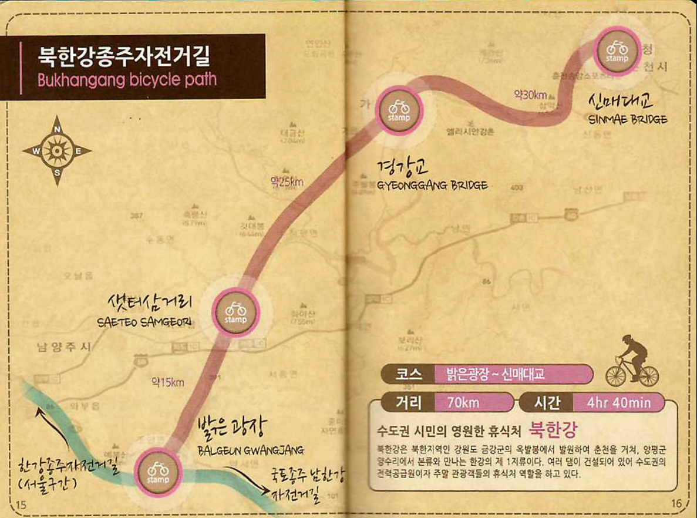

| 코스명 | 북한강 자전거길 |
| 코 스 | 밝은광장~샛터삼거리~경강교~신매대교 |
| 거 리 | 70km |
| 시 간 | 4시간 40분 |

초보자로서 차로만 여행갔던 춘천까지 정말로 자전거를 타고 갈 수 있을까 걱정했는데 좋은 친구들과 함께하니 덧없이 즐거운 라이딩 이었습니다
때맞춰 바람까지 도와주니 즐거움이 배가 되었습니다.
춘천에 도착하여 의암댐 주변의 풍경과 데크로 이루어진 자전거 길은 정말로 아름다운 길이었습니다. 마지막 코스인 신매대교를 지나 끝자락에 있는
가로수와 어울린 깔끔한 직선길은 사진을 찍지 않으면 갈 수 없는 멋진 길이었습니다.
다음엔 바람의 도움 없이 한번 다시 가볼까 합니다.